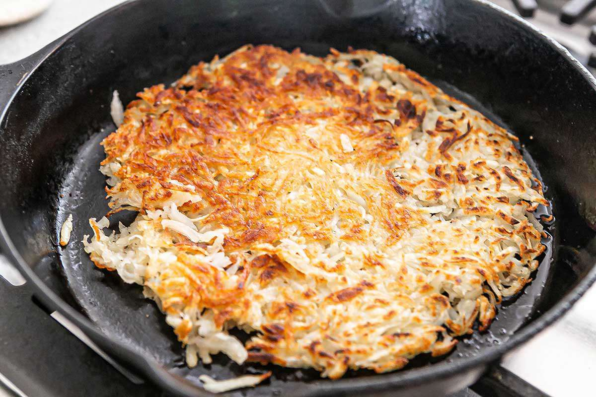

Crispy and Golden
Hashbrowns
Ingredients
- 2 large potatoes, peeled
- 2 tablespoons butter
- Salt and pepper to taste
Instructions
- Grate the potatoes and rinse under cold water. Squeeze out as much moisture as possible using a towel.
- Heat butter in a large skillet over medium-high heat. Add the grated potatoes, spreading them out evenly. Season with salt and pepper.
- Cook until the bottom is golden brown and crispy, about 5 minutes. Flip and cook the other side.
- Serve hot, garnished with fresh herbs if desired.